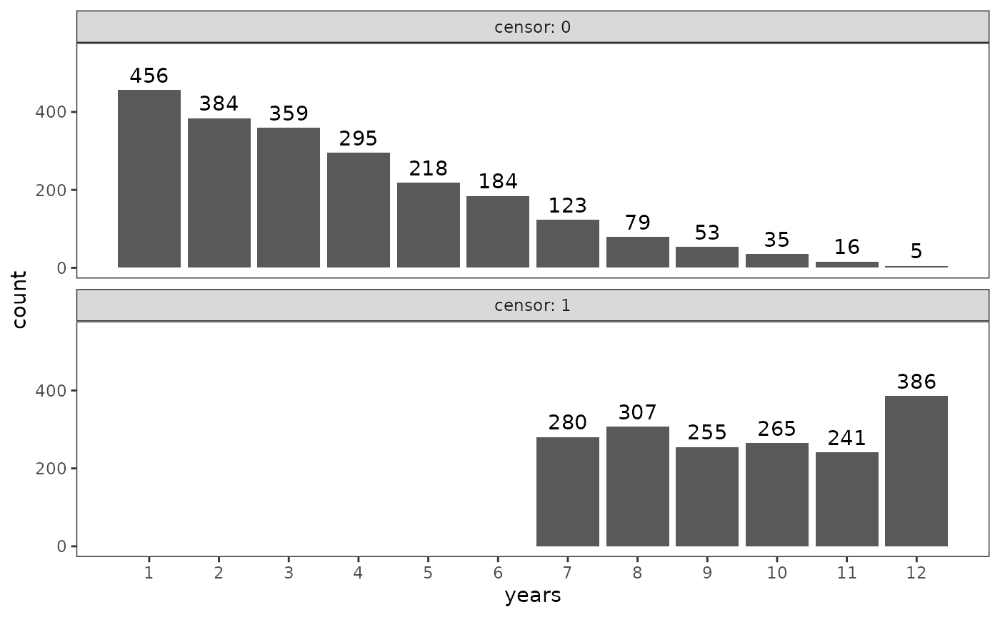

Chapter 9: A framework for investigating event occurrence
Source:vignettes/articles/chapter-9.Rmd
chapter-9.Rmd9.1 Should you conduct a survival analysis? The “whether” and “when” test
In Section 9.1 Singer and Willett (2003) introduce a simple mnemonic they refer to as the “whether” and “when” test to determine whether a research question may call for survival analysis: If your research questions includes the words “whether” or “when”, then you likely need to use survival methods. To illustrate the range of research questions for which survival methods are suitable, they introduce three studies that pass the “whether” and “when” test:
-
alcohol_relapse: A person-level data frame with 89 rows and 3 columns containing a subset of data from Cooney and colleagues (1991), who measured whether and (if so) when 89 recently treated alcoholics first relapsed to alcohol use.alcohol_relapse #> # A tibble: 89 × 3 #> id weeks censor #> <fct> <dbl> <dbl> #> 1 1 0.714 0 #> 2 2 0.714 0 #> 3 3 1.14 0 #> 4 4 1.43 0 #> 5 5 1.71 0 #> 6 6 1.71 0 #> 7 7 2.14 0 #> 8 8 2.71 0 #> 9 9 3.86 0 #> 10 10 4.14 0 #> # ℹ 79 more rows -
teachers: A person-level data frame with 3941 rows and 3 columns containing a subset of data from Singer (1993), who measured whether and (if so) when 3941 newly hired special educators in Michigan first stopped teaching in the state.teachers #> # A tibble: 3,941 × 3 #> id years censor #> <fct> <dbl> <dbl> #> 1 1 1 0 #> 2 2 2 0 #> 3 3 1 0 #> 4 4 1 0 #> 5 5 12 1 #> 6 6 1 0 #> 7 7 12 1 #> 8 8 1 0 #> 9 9 2 0 #> 10 10 2 0 #> # ℹ 3,931 more rows -
suicide_ideation: A person-level data frame with 391 rows and 4 columns containing a subset of data from Bolger and colleagues (1989), who measured whether and (if so) when 391 undergraduate students first experienced suicide ideation.suicide_ideation #> # A tibble: 391 × 4 #> id time censor age #> <fct> <dbl> <dbl> <dbl> #> 1 1 16 0 18 #> 2 2 10 0 19 #> 3 3 16 0 19 #> 4 4 20 0 22 #> 5 6 15 0 22 #> 6 7 10 0 19 #> 7 8 22 1 22 #> 8 9 22 1 22 #> 9 10 15 0 20 #> 10 11 10 0 19 #> # ℹ 381 more rows
In later chapters, we will return to these data sets to explore different survival methods.
9.2 Framing a research question about event occurrence
In Section 9.2 Singer and Willett (2003) discuss the three methodological features that make a study suitable for survival analysis:
- A target event, whose occurrence represents an individual’s transition from one state to another state, where the set of states are precisely defined, mutually exclusive, and jointly exhaustive.
- A beginning of time, when everyone in the population is (at least theoretically) at risk of experiencing the target event, and all individuals occupy only one of the possible non-event states. The temporal distance from the beginning of time until event occurrence is referred to as the event time.
- A metric for clocking time, which provides a meaningful temporal scale to record event occurrence—in the smallest possible units relevant to the process under study. For analytical reasons, we further distinguish between discrete time and continuous time, depending on whether time is measured in discrete or continuous intervals.
Each of the three example studies introduced above possesses these features.
| Study | Target event | Beginning of time | Metric | Interval |
|---|---|---|---|---|
alcohol_relapse |
First relapse to alcohol use | Post-treatment | Weeks | Continuous |
teachers |
Stopped teaching in Michigan | Hiring date | Years | Discrete |
suicide_ideation |
First suicide ideation | Birth | Age (in years) | Discrete |
9.3 Censoring: How complete are the data on event occurrence?
In Section 9.3 Singer and Willett (2003) introduce the concept of censoring and censored observations, which occur when sample members have unknown event times—preventing you from knowing whether and (if so) when the target event occurs for a subset of the sample. Censoring is a hallmark feature of event occurrence data that makes new statistical methods necessary; it arises in different ways and rates, and has several different forms:
- Censoring occurs for two primary reasons: (1) some individuals will never experience the target event; and (2) some individuals will experience the target event outside the study’s data collection period.
- The amount of censoring in a study is related to two factors: (1) the rate at which the target event occurs in the population; and (2) the length of the data collection period.
- There are two mechanisms behind censoring: (1) a noninformative mechanism, where censoring occurs for reasons independent of event occurrence and the risk of event occurrence; and (2) an informative mechanism, where censoring occurs for reasons related to event occurrence and the risk of event occurrence
- There are two types of censoring: (1) right-censoring arises when an event time is unknown because event occurrence is not observed; and (2) left-censoring arises when an event time is unknown because the beginning of time is not observed.
Each of the three example studies had different rates of censoring: 22.5% of the former alcoholics remained abstinent, 44.0% of the newly hired teachers were still teaching Michigan, and 29.7% of the undergraduates did not experience suicide ideation.
map(
list(
alcohol_relapse = alcohol_relapse,
teachers = teachers,
suicide_ideation = suicide_ideation
),
\(.x) .x |> count(censor, name = "count") |> mutate(proportion = count / sum(count))
)
#> $alcohol_relapse
#> # A tibble: 2 × 3
#> censor count proportion
#> <dbl> <int> <dbl>
#> 1 0 69 0.775
#> 2 1 20 0.225
#>
#> $teachers
#> # A tibble: 2 × 3
#> censor count proportion
#> <dbl> <int> <dbl>
#> 1 0 2207 0.560
#> 2 1 1734 0.440
#>
#> $suicide_ideation
#> # A tibble: 2 × 3
#> censor count proportion
#> <dbl> <int> <dbl>
#> 1 0 275 0.703
#> 2 1 116 0.297As Singer and Willett (2003) discuss, the toll of censoring can be
seen by plotting the event times and censored event times for the
teachers data. Notice the discrepancy in sample
distributions between those with known event times and those with
censored event times—this is typical of event occurrence data, and makes
summarizing time-to-event occurrence difficult to do adequately with
traditional descriptive methods (e.g., measures of central tendency and
dispersion).
# Figure 9.1, page 321:
ggplot(teachers, aes(x = years)) +
geom_bar() +
geom_text(aes(label = after_stat(count)), stat = "count", vjust = -.5) +
scale_x_continuous(breaks = 1:12) +
coord_cartesian(ylim = c(0, 550)) +
facet_wrap(vars(censor), nrow = 2, labeller = label_both)
In the remaining chapters, we will explore several different methods for survival analysis: An alternative statistical approach that incorporates censored observations based on the information they provide about event nonoccurrence, allowing us to adequately summarize time-to-event occurrence by dealing evenhandedly with both known and censored event times.